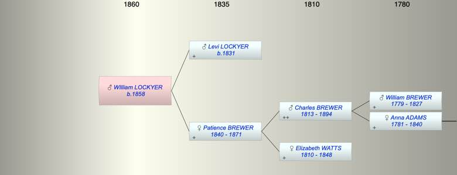

| [Index] |
| WIlliam LOCKYER (1858 - ) |
|  |
| b. 1858 at Teignmouth |
| Near Relatives of WIlliam LOCKYER (1858 - ) | ||||||
| Relationship | Person | Born | Birth Place | Died | Death Place | Age |
| Grandfather | Charles BREWER | 18 Mar 1813 | Exminster | 1894 | 81 | |
| Grandmother | Elizabeth WATTS | 1810 | 1848 | Starcross | 38 | |
| Father | Levi LOCKYER | 1831 | Branscombe | |||
| Mother | Patience BREWER | 1840 | Starcross | 1871 | 31 | |
| Self | WIlliam LOCKYER | 1858 | Teignmouth | |||
| Sister | Elizabeth LOCKYER | 1861 | Teignmouth | |||
| Brother | George LOCKYER | 1865 | ||||
| Sister | Chalres LOCKYER | 1867 | ||||
| Uncle | Samulel Watts BREWER | 29 Oct 1837 | Exminster | 1915 | 78 | |
| Aunt | Ann HOOPER | 1838 | 1905 | 67 | ||
| Aunt | Harriet Watts BREWER | 1842 | Starcross | Y | ||
| Uncle | George BREWER | 1843 | Starcross | 1875 | 32 | |
| Aunt | Mary Elizabeth TOLSHER | |||||
| Aunt | Mary Jane BREWER | 1845 | Starcross | 1845 | Starcross | 0 |
| Uncle | Albert BREWER | 1848 | Starcross | 1848 | Starcross | 0 |
| Aunt | Ruth BREWER | 10 Dec 1849 | Starcross | 31 Mar 1921 | Newton Abbott | 71 |
| Uncle | George Pitwood CARLISLE | |||||
| Uncle | Charles BREWER | 1851 | Starcross | |||
| Aunt | Sarah Agnes HAMMETT | 1841 | Plymton | 1880 | 39 | |
| Aunt | Ellen GOODWIN | 29 Jan 1911 | ||||
| Uncle | Daniel BREWER | 29 Mar 1853 | Teignmouth | |||
| Uncle | Solomon BREWER | 1855 | Teignmouth | |||
| Aunt | Selina VROOK | |||||
| Uncle | William Henry BREWER | 1857 | Teignmouth | |||
| Aunt | Sarah PATON | abt 1858 | ||||
| Aunt | Bertha BREWER | 1859 | Teignmouth | 06 Apr 1899 | Teignmouth | 40 |
| Aunt | Blanche BREWER | 30 Jul 1860 | Teignmouth | 1916 | Australia | 56 |
| Uncle | William Henry SMITH | |||||
| Cousin | Charles Hooper BREWER | 1862 | 1941 | 79 | ||
| Cousin | William George BREWER | 1863 | ||||
| Cousin | Frank Hooper BREWER | 1865 | ||||
| Cousin | Samuel W BREWER | 1868 | ||||
| Cousin | Living or Recently Deceased | |||||
| Cousin | Bessie Lilian ??? BREWER | 1877 | ||||
| Cousin | Lilian BREWER | 1878 | ||||
| Cousin | Harriett BREWER | 1870 | ||||
| Cousin | Mary E T BREWER | 1871 | ||||
| Cousin | Charles Goodwin BREWER | 1884 | ||||
| Cousin | George Goodwin BREWER | 27 Jan 1886 | Teignmouth | 1894 | 8 | |
| Cousin | Living or Recently Deceased | |||||
| Cousin | Living or Recently Deceased | |||||
| Cousin | Stewart G BREWER | 05 Jul 1890 | Teignmouth | 1892 | 2 | |
| Cousin | Living or Recently Deceased | |||||
| Cousin | Living or Recently Deceased | |||||
| Events in WIlliam LOCKYER (1858 - )'s life | |||||
| Date | Age | Event | Place | Notes | Src |
| 1858 | WIlliam LOCKYER was born | Teignmouth | ex 1861 census | ||
| 1871 | 13 | Death of mother Patience BREWER (aged 31) | |||
| Created on a Mac™ using iFamily for Mac™ on 15 Sep 2023 |